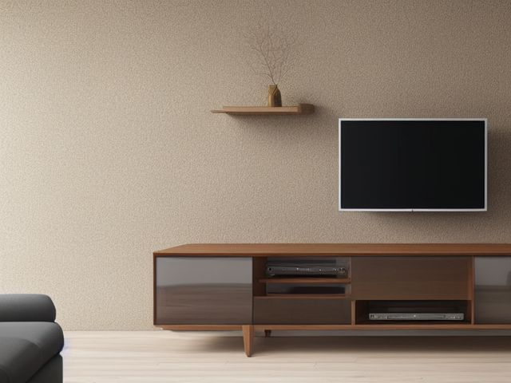

Family Room micro zone
The Primary Media Zone
Hold the television, consoles, and controllers so anyone in the house can start watching or playing without hunting for a remote.
One session: 45-75 min. most of it behind the unit, untangling and labeling cables

What done looks like
One console per shelf with its own controllers docked beside it, disc cases standing spine out in a single row, every cable labeled at both ends, the power strip off the carpet, and nothing resting on top of a vent slot.
Check these before you start
- Fall, cut, or crushA flat screen on a low unit tips forward when a child pulls on the frame or climbs the shelf underneath it. Check the strap or the mount bolts with your hand, not your eye.
- Burn or fireConsoles and streaming boxes vent through slots on the top and back. A blanket laid over one, a stack of disc cases on top, or a cabinet door kept shut during play traps that heat against the board.
- FallPower and video cables that cross the open floor between the unit and the sofa catch feet, and this is a room people walk through in the dark.
The six passes, in order
Work them in this order. Sorting after you have arranged things means arranging things you were about to remove.
Sort
Decide what stays. Everything else leaves the zone now.
Pull every disc case, spare remote, headset, and loose cable out of the cabinet onto the floor. Anything that pairs with a console or a television you no longer own leaves today, and that usually includes two or three remotes you have been keeping in case.
Straighten
Give what stays a home, placed where the hand actually reaches.
Give each console its own shelf with the controllers and headset that belong to it, and stand disc cases upright in one row instead of stacking them flat where the bottom four become unreachable.
Shine
Clean it, and use the cleaning to inspect what you cannot see when it is full.
Brush the vent slots on each console and the back panel of the television with a vacuum brush head, wipe the controller grips and thumbstick collars with a barely damp cloth, and finish the screen with a dry microfiber cloth only.
Safety
Make the zone safe for everybody who uses it, including the shortest person.
Put your hand on the television and push gently. If it rocks, the anti-tip strap or the mount bolts need attention before you touch anything else in this room. Then move the power strip off the carpet and out of the line people walk between the sofa and the door.
Standardize
Write down the best way you know today, so it survives you forgetting.
While the cabinet is open, label both ends of every cable, and tape a small card inside the cabinet door listing which controller and which headset belong to which console.
Sustain
Attach the reset to something that already happens, so it keeps itself.
When the credits roll, controllers go back on their dock and remotes go in the tray before the television goes off.
The console with the save files
You are keeping a previous-generation console because someone's save file lives on it, and that is a genuine reason. It is also exactly why it has sat unplugged behind the newer machine for two years. Settle it in this session rather than the next one. Plug it in now, and either move the save data to a card or to the current console, or hand a controller to the child and sit through one real session to find out whether anyone still cares. If it will not power on, or nobody asks for it again after that evening, you are storing a box of plastic guarding a memory it can no longer play. Photograph the save screen if it matters to someone, then route the console, its controllers, and its cables out together in one trip. Splitting them up is how half of it ends up back in the cabinet.
Cleaning it properly
This is the zone where clean is really about heat and dust. Work from the screen back to the vents, then down to the shelves and the floor behind the unit, because the dust you cannot see is the dust that cooks a console.
Inspect as you clean. Cleaning is the only time you see the zone empty, so use it.
- A cracked, stiffened, or scorched section on any power or video cable as it passes through your hand, especially near the plug end.
- Dust that packs a vent solid again fast, or a console that runs hot to the touch, both of which say the airflow is being choked.
- A mount bracket or shelf that shifts or flexes under the television's weight when you lift or lean near it.
- A sticky drink ring or a water stain on the top of the unit, where a glass has been set over live connections.
- Browning or a warm patch on the power strip body, or a socket that grips a plug loosely.
The standard that keeps it fixed
Each console sits alone on its shelf with its matched controllers and headset, the cable card is taped inside the door, and no vent slot is covered.
Reset trigger. When the credits roll, before the television goes off.
The rest of the family room, in working order
Each of these is one session on its own. Finish this zone before you open the next.
- The Primary Media Zone, you are here
- The Toy and Play Zone
- The Board Game and Puzzle Zone
- The Blanket and Comfort Zone
- The Charging and Device Zone
- The Craft and Activity Zone
The Family Room in full, with what each of the 6 zones is for
Related reading
- What is 6S?
- This zone's safety pass, in full
- Is one spot in this zone always the one you skip?
- Why this zone gets messy again
- Decluttering vs. organizing
- Before you buy storage for this zone
- Still does not fit, even after the honest count?
- Does something in this zone actually get used somewhere else?
- Stuck on one item in this zone?
- Written the standard, but nobody else follows it?
- Does everyone in the house agree what "done" looks like here?
- Does more than one person use this zone?
- Found a duplicate of something in this zone?
- Why the standard above names one home per category
- Is the everyday item in this zone actually the easy one to reach?
- Not sure whether to keep something in this zone?
- Does this zone keep running out of something?
- Started this zone and stalled partway through?
- Have you stopped noticing the clutter in this zone?
When you want it off the screen
Carry The Primary Media Zone into the room
The method above is complete and free. The Whole House Print Pack puts The Primary Media Zone and the other 113 micro zones on 684 printable cards, so the steps you just read are not stuck behind a phone screen while your hands are full.
The Print Pack, 19 dollarsJust this zone, 4 dollarsOr draw a card free
The Primary Media Zone on its own is 4 dollars for 6 cards. All 114 micro zones is 19 dollars for 684. The whole house is the better buy; the single zone is here so you can take only what you are working on.
If The Primary Media Zone keeps fighting back, the real problem usually sits somewhere else in the room. A one hour virtual consult is 250 dollars: we find the function, the friction and the root cause together, and you keep a written standard for the space. See what a consult covers.